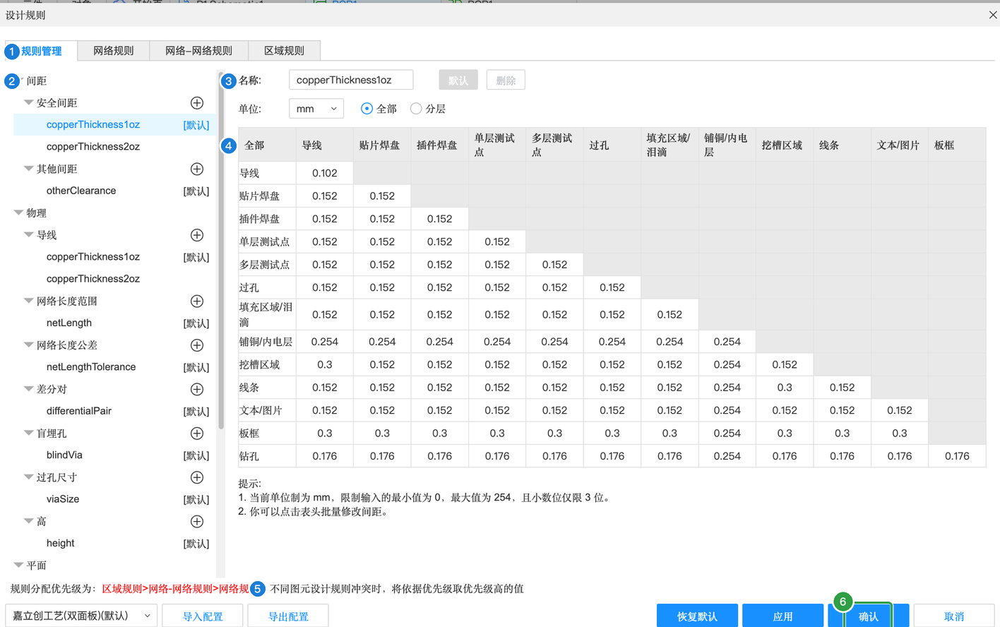
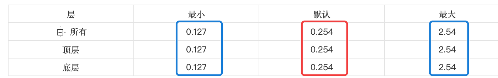
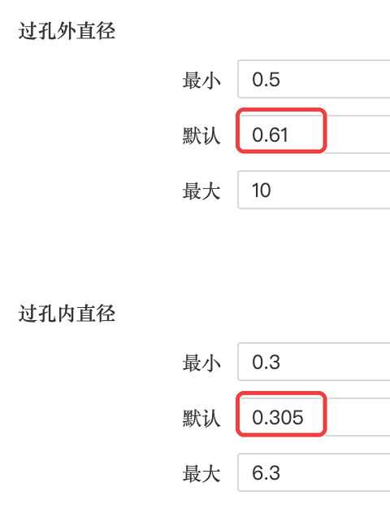
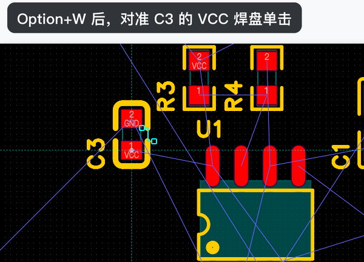
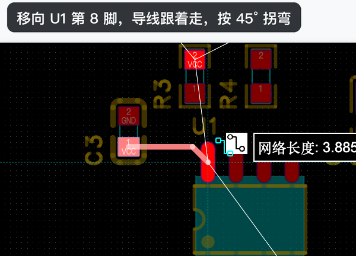
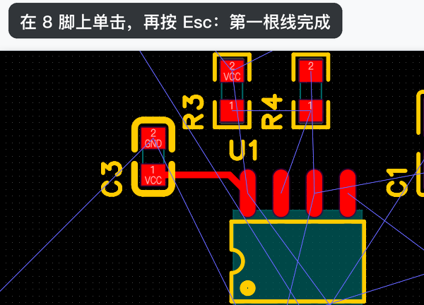
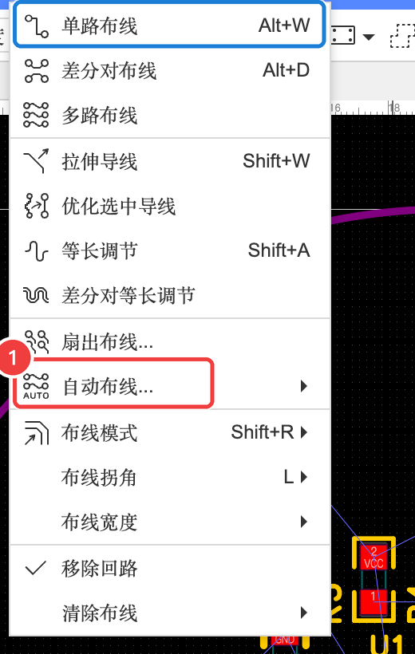
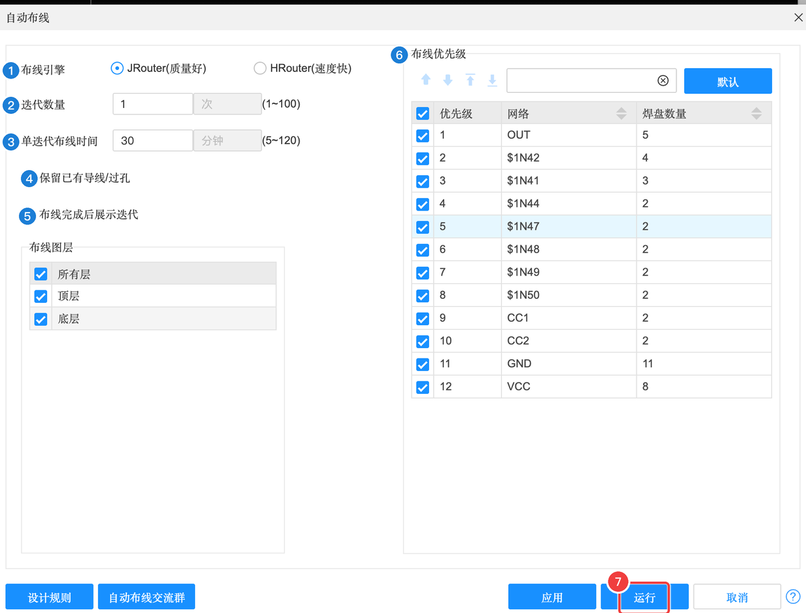
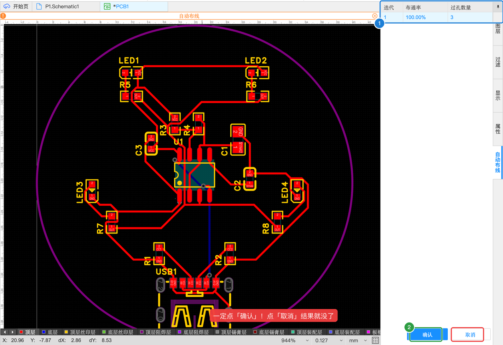

A-6 布线：手动布线与自动布线
布线就是把飞线变成真正的铜线。我们先看看工厂能做到多细（设计规则），手动连一根线体验一下，然后把剩下的交给自动布线——几十秒就能全部布通。
A6.1 先看一眼设计规则#
工厂的机器有精度极限：线不能太细、线和线不能挨太近、孔不能太小。设计规则就是把这些限制告诉软件，布线时软件会自动遵守，检查（DRC）时也按它来判断。
- 点菜单「设计」→「设计规则…」

设计规则对话框（整体）
| 编号 | 区域 | 含义 | 本例 |
|---|---|---|---|
| 1 | 规则管理 / 网络规则 / 网络-网络规则 / 区域规则 | 上面四个标签：「规则管理」是全局规则；后三个可以给某个网络、某两个网络之间、板上某块区域单独设规则 | 只看「规则管理」 |
| 2 | 左侧规则树 | 规则的分类：间距（安全间距、其他间距）、导线、网络长度、差分对、盲埋孔、过孔尺寸…… 每类下面是具体的规则名，带「[默认]」的是正在用的 | 默认 |
| 3 | 名称 / 单位 | 当前规则的名字（如 copperThickness1oz = 1 盎司铜厚时的间距）和单位 | mm |
| 4 | 规则内容 | 右边的表格或数值。安全间距是一个“谁和谁之间至少隔多远”的矩阵 | 不改 |
| 5 | 优先级说明 | 规则冲突时取优先级高的：区域规则 > 网络-网络规则 > 网络规则 | — |
| 6 | 确认 / 应用 / 取消 | 下面还有导入/导出配置、恢复默认 | 不改就点取消 |
本例全部用默认值。默认规则来自预设「嘉立创工艺（双面板）」，刚好是嘉立创能稳定生产的参数，几个最重要的数值记一下：
| 规则 | 默认值 | 大白话 |
|---|---|---|
| 安全间距 | 大多为 0.152 mm | 不同网络的铜（导线、焊盘、过孔）之间至少隔这么远，否则可能短路 |
| 导线线宽 | 最小 0.127 / 默认 0.254 / 最大 2.54 mm | 画线时默认 0.254 mm（约 10 mil） |
| 过孔外直径 | 最小 0.5 / 默认 0.61 mm | 过孔外圈铜环的大小 |
| 过孔内直径 | 最小 0.3 / 默认 0.305 mm | 钻孔的大小 |


A6.2 手动布一根线#
先手动连一根，体会一下布线的操作。我们把 C3 的 VCC 焊盘连到 U1 的第 8 脚（VCC）：
- 确认当前层是「顶层」（底部图层快捷栏）
- 按 ⌥W（单路布线），光标对准 C3 的 VCC 焊盘单击
- 移向 U1 的 8 脚，导线跟着鼠标走，默认 45° 拐弯；旁边的飞线会指着目标焊盘
- 在 8 脚上单击，再按 Esc 结束



连好之后，这两个焊盘之间的飞线就消失了。导线默认宽度 0.254 mm（跟随规则）。

A6.3 自动布线#
剩下的线交给软件。小板子用自动布线完全没问题：
- 点「布线」→「自动布线…」→「自动布线设置…」，先看一下设置

自动布线设置
| 编号 | 属性 | 含义（大白话） | 本例怎么填 | 什么时候需要改 |
|---|---|---|---|---|
| 1 | 布线引擎 | JRouter：质量好；HRouter：速度快 | JRouter（默认） | 板子大、等不及时试试 HRouter |
| 2 | 迭代数量 | 让软件反复优化几轮（1~100） | 1 | 想要更好的结果可以加大，但更慢 |
| 3 | 单迭代布线时间 | 每一轮最多跑多久（5~120 分钟） | 30 | — |
| 4 | 保留已有导线 / 过孔 | 不动你已经手动画好的线 | ✓ 勾选 | — |
| 5 | 布线完成后展示迭代 | 布完后列出每一轮的结果给你挑 | ✓ 勾选 | — |
| 6 | 布线优先级 | 按网络排先后：优先级高的网络先布 | 默认 | 某几根线特别重要时调高 |
| 布线图层 | 在哪些层上布线：所有层 / 只顶层 / 只底层 | 所有层 | 想做单面板时选一层 | |
| 运行 / 应用 / 取消 | 「运行」直接开始自动布线 | 点「运行」 | — |
- 点「运行」（或者关掉设置，用「布线 → 自动布线… → 所有网络」）
- 等几十秒，右上角会显示结果：本例迭代 1，布通率 100%，过孔 3 个
- 点右下角的「确认」应用结果

应用之后，所有飞线都变成了铜线：

- 布通率 100% = 所有该连的都连上了，飞线一条不剩。
- 大部分导线在顶层；VCC 有 4 段走到了底层，靠 3 个过孔上下连接。
- 布通率不到 100% 时：剩下的飞线手动连，或者调整布局让元件之间更宽松，再跑一次。